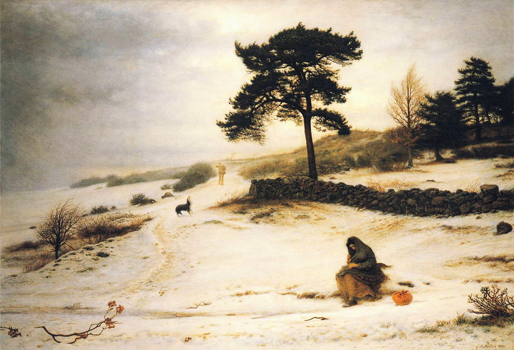

<head>
<meta charset="UTF-8" />
<meta name="keywords" content="drawing, painting" />
<meta name="description" content="drawings by Sunjy" />
<title>Sunjy</title>
<link rel="shortcut icon" type="image/x-icon" href="../../mImages/mCommon/favicon.ico" media="screen" />
<link rel="stylesheet" type="text/css" href="../../mCsses/mCommon/mCssA.css" />
<link rel="stylesheet" type="text/css" href="../../mCsses/mCommon/mCssB.css" />
<link rel="stylesheet" type="text/css" href="../../mCsses/mCommon/mCssC.css" />
<link rel="stylesheet" type="text/css" href="../../mCsses/mCommon/mCssD.css" />
<link rel="stylesheet" type="text/css" href="../../mCsses/mContent/mCssA.css" />
<link rel="stylesheet" type="text/css" href="../../mCsses/mContent/mCssB.css" />
<link rel="stylesheet" type="text/css" href="../../mCsses/mContent/mCssC.css" />
<link rel="stylesheet" type="text/css" href="../../mCsses/mContent/mCssD.css" />
</head>
<script type="text/javascript" src="../../mScripts/mContent/mContentAA.js" /></script>
<script type="text/javascript" src="../../mScripts/mContent/mContentAB.js" /></script>
<script type="text/javascript" src="../../mScripts/mContent/mContentAC.js" /></script>
<script type="text/javascript" src="../../mScripts/mContent/mContentAD.js" /></script>
<script type="text/javascript"></script> 
<script type="text/javascript">
document.write('<div class="mImgAbsolute"></div>');
/*
document.write('<p class="mFontSizeBColor" />From a white paper...</p>');
document.write('<table class="center"><tr><td>');
document.write('');
document.write('</td></tr></table>');
*/
</script>


<script type="text/javascript">
document.write('<p class="mFontSizeBColor" />Blow Blow Thou Wind</p>');
document.write('<p class="mFontSizeSColor" />“Blow Blow Thou Wind” by John Everett Millais depicts a winter landscape with a hapless dog at the center, with divided loyalty between the stranded mother with her child, and the man who is walking away. Which will the loyal dog pick?<br><br>The mother is seated on a rock in the snow. She has her shawl pulled over her head to keep the wind and cold from her child as it feeds. In the distance, the child’s father is walking away.<br><br>The poem below provides a clue. Is the man abandoning the family of going ahead to search for food and shelter?<br><br>The title comes from one of Shakespeare’s poems in “As You Like It”:<br><br>Blow Blow thou winter wind<br><br>Thou art not so unkind<br><br>As man’s ingratitude…<br><br>…Though thou the waters warp,<br><br>Thy sting is not so sharp<br><br>As friend remembered not.<br><br>The artist, Sir John Everett Millais, was a Victorian-era English painter who was one of the founders of the Pre-Raphaelite Brotherhood.  The Pre-Raphaelite Brotherhood was founded at his home in London.<br><br>Millais became a famous exponent of the style, his painting Christ in the House of His Parents.<br><br>By the mid-1850s, Millais was moving away from the Pre-Raphaelite style. He had developed a new and powerful form of realism in his art.<br><br>His fascination with landscapes and with wild and bleak locations is also evident in the many landscape paintings of his later period, which usually depict difficult terrain during the winter like this painting.<br></p>');
document.write('<table class="center" /><tr><td>');
document.write('<br>The mother is seated on a rock in the snow. She has her shawl pulled over her head to keep the wind and cold from her child as it feeds. In the distance, the child’s father is walking away.<br><br>The poem below provides a clue. Is the man abandoning the family of going ahead to search for food and shelter?<br><br>The title comes from one of Shakespeare’s poems in “As You Like It”:<br><br>Blow Blow thou winter wind<br><br>Thou art not so unkind<br><br>As man’s ingratitude…<br><br>…Though thou the waters warp,<br><br>Thy sting is not so sharp<br><br>As friend remembered not.<br><br>The artist, Sir John Everett Millais, was a Victorian-era English painter who was one of the founders of the Pre-Raphaelite Brotherhood.  The Pre-Raphaelite Brotherhood was founded at his home in London.<br><br>Millais became a famous exponent of the style, his painting Christ in the House of His Parents.<br><br>By the mid-1850s, Millais was moving away from the Pre-Raphaelite style. He had developed a new and powerful form of realism in his art.<br><br>His fascination with landscapes and with wild and bleak locations is also evident in the many landscape paintings of his later period, which usually depict difficult terrain during the winter like this painting.<br>" />');
document.write('</td></tr></table>');
</script>


